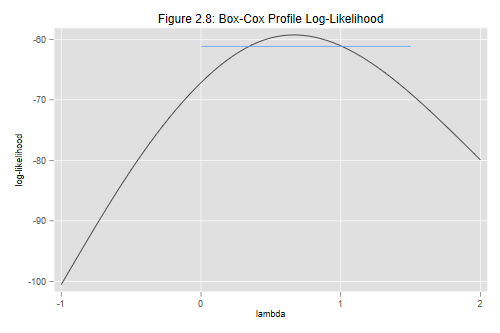

The final section in this chapter deals with Box-Cox transformations. As usual, we start by reading the data and recreating the variables needed. To avoid problems with negative values of the response variable, we add 1/2 to all observations.
. use https://grodri.github.io/datasets/effort, clear (Family Planning Effort Data) . gen y = change + 0.5
We will determine the optimal transformation for the analysis of covariance model of Section 2.8.
Stata has a powerful boxcox command that can fit models
where both the response and optionally (a subset of) the predictors are
transformed. Earlier versions could transform only the outcome, but in
exchange provided a few additional options, including a plot that we
will now do “by hand”. The comand does not support factor variables, so
we will create dummy variables for the levels of
effort.
. gen effortMod = effort >= 5 & effort <= 14 . gen effortHigh = effort >= 15 & !missing(effort) . local predictors setting effortMod effortHigh
We are interested in transforming the outcome or “left-hand-side”
only. I will specify the option model(lhs) to make this
clear, although it is the default and can be omitted. I will also
specify nolog to suppress the iteration log.
. boxcox y `predictors', model(lhs) nolog
Fitting comparison model
Fitting full model
Number of obs = 20
LR chi2(3) = 29.29
Log likelihood = -59.245917 Prob > chi2 = 0.000
─────────────┬────────────────────────────────────────────────────────────────
y │ Coefficient Std. err. z P>|z| [95% conf. interval]
─────────────┼────────────────────────────────────────────────────────────────
/theta │ .6686079 .167689 3.99 0.000 .3399435 .9972724
─────────────┴────────────────────────────────────────────────────────────────
Estimates of scale-variant parameters
─────────────┬──────────────
│ Coefficient
─────────────┼──────────────
Notrans │
setting │ .0945824
effortMod │ 1.957216
effortHigh │ 7.661322
_cons │ -3.247024
─────────────┼──────────────
/sigma │ 2.282724
─────────────┴──────────────
─────────────────────────────────────────────────────────
Test Restricted LR statistic
H0: log likelihood chi2 Prob > chi2
─────────────────────────────────────────────────────────
theta = -1 -100.56379 82.64 0.000
theta = 0 -67.15625 15.82 0.000
theta = 1 -61.068635 3.65 0.056
─────────────────────────────────────────────────────────
. scalar maxlogL = e(ll)
Stata suggests a power of 0.67, which is in good agreement with what
one would expect from Figure 2.8 in the notes. I’ll show you how to do
this figure below. For now, note that we saved the maximized
log-likelihood, which was available as e(ll), in a scalar
called maxlogL. (To see a list of all quantities available
for extraction after an estimation command type
ereturn list.)
Stata also fits the model using the optimal transformation and shows the resulting coefficients, but not the standard errors. The latter are supressed because they do not account for the fact that estimating the transformation itself introduces additional uncertainty. To test the significance of a coefficient you can compare the models with and without the corresponding variable using a likelihood ratio test. Note, however, that dropping a variable may change the transformation being used.
My preferred approach is to use the Box-Cox procedure as general guidance on whether a transformation is needed and, if so, which value in the “ladder of powers” would do a good job. Having settled on something like taking square roots, logs, or reciprocals, one can then proceed conditionally on the chosen transformation. Stata can help implement this approach in two ways.
First, Stata shows likelihood ratio tests for the hypotheses that the Box-Cox parameter is -1, 0 and 1, which correspond to the reciprocal, the log, and no transformation at all. The last possibility cannot be rejected at the conventional five percent level, indicating that there is no evidence that we need to transform the response. The log and reciprocal transformations are both soundly rejected. If one insisted on transforming the data, taking square roots would probably be best.
Second, we can plot a profile likelihood showing the relative merit
of various transformations. Stata 6 used to do a graph similar to what
we need as an option of the boxcox command, but the option
is not available in later versions. This provides us an opportunity to
do a little programming exercise. (We could, of course, type
version 6 and have Stata behave as it did back then. One
disadvantage of this approach is that we have no control over the range
of transformations plotted. Also, version 6 used to omit a constant from
the log-likelihood, so the reported values need to be adjusted for
comparison with later versions.)
It turns out that we can compute the Box-Cox log-likelihood for any
value of the parameter using two options of the boxcox
command which deal with the maximization procedure. We specify the
transformation as a starting value with the option
from(value, copy), and
set the maximum number of iterations to zero with
iterate(0), so Stata simply computes the log-likelihood,
which we can then retrieve from e(ll). A hack, really, but
it beats having to program your own function.
Next we write a short loop to compute the log-likelihood for exponent
values between -1 and 2 in steps of 0.5. We also create two new
variables, p to store the exponents, and logL
to store the log-likelihoods. (If you want to learn more about Stata
macros and loops see part 5 of my Stata
Tutorial.)
. gen p = .
(20 missing values generated)
. gen logL = .
(20 missing values generated)
. local i = 1
. forvalues p = -1(0.5)2 {
2. quietly boxcox y `predictors', from(`p',copy) iterate(0)
3. quietly replace p = `p' in `i'
4. quietly replace logL = e(ll) in `i'
5. local i = `i' + 1
6. }
The graph that follows uses a spline to join the points using a smooth curve. We also draw a horizontal line to identify powers that are not significantly different from the best. This occurs when twice the difference in log-likelihoods is less than 3.84, the 95% critical value for a chi-squared with one d.f. In the scale of logL this makes the line 3.84/2 units below the highest point of the curve.
. gen cb = maxlogL - 3.84/2 if p > -0.5 & p < 2
(16 missing values generated)
. graph twoway (mspline logL p, bands(7)) (line cb p) , ///
> title("Figure 2.8: Box-Cox Profile Log-Likelihood") ///
> xtitle("lambda") ytitle("log-likelihood") legend(off)
. graph export fig28.png, width(500) replace
file fig28.png saved as PNG format

We can see that the profile log-likehood is rather flat near the maximum, and that all these values are not significantly different from the optimal transformation.
Our final calculation involves Atkinson’s score test, which requires
fitting the auxiliary variable given in Equation 2.31 in the notes. We
compute the geometric mean, storing it in a scalar called
gmean, use this to compute the auxiliary variable
atkinson, and then fit the extended model:
. gen logy = ln(y)
. quietly summarize logy
. scalar gmean = exp(r(mean))
. gen atkinson = y * (ln(y/gmean) - 1 )
. regress change `predictors' atkinson
Source │ SS df MS Number of obs = 20
─────────────┼────────────────────────────────── F(4, 15) = 23.67
Model │ 2287.80568 4 571.951421 Prob > F = 0.0000
Residual │ 362.394315 15 24.159621 R-squared = 0.8633
─────────────┼────────────────────────────────── Adj R-squared = 0.8268
Total │ 2650.2 19 139.484211 Root MSE = 4.9152
─────────────┬────────────────────────────────────────────────────────────────
change │ Coefficient Std. err. t P>|t| [95% conf. interval]
─────────────┼────────────────────────────────────────────────────────────────
setting │ .1969659 .0911353 2.16 0.047 .0027155 .3912163
effortMod │ 3.785032 2.739944 1.38 0.187 -2.05502 9.625084
effortHigh │ 11.66637 4.380003 2.66 0.018 2.330614 21.00212
atkinson │ .5916301 .2275638 2.60 0.020 .1065895 1.076671
_cons │ -3.858157 6.197538 -0.62 0.543 -17.0679 9.351583
─────────────┴────────────────────────────────────────────────────────────────
The coefficient of the auxiliary variable is 0.59, so the optimal power is approximately 1-0.59 = 0.41, suggesting again that something like a square root transformation might be indicated. The associated t-statistic is significant at the two percent level, but the more accurate likelihood ratio test statistic calculated earlier was not. Thus, we do not have strong evidence against keeping the response in the original scale.
Exercise 1: Try the Box-Tidwell procedure described in Section 2.10.4 of the notes to see if a transformation of social setting would be indicated.
Exercise 2: Run boxcox to estimate optimal (and
possibly different) transformations of change and setting, but obviously
not of the two dummies representing levels of effort